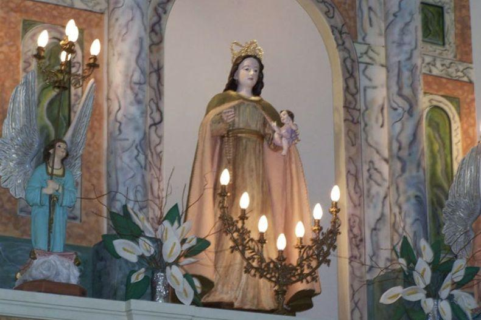

Se sitúa frente a la plaza de Los Barriales, lo que facilita su reconocimiento a la distancia. Si bien el entorno presenta procesos de transformación a uso residencial, por la parte posterior aún se conservan paños cultivados con olivos y otros en estado de abandono. El edificio principal de la Capilla data de 1881. Tiene forma rectangular compacta, con una única nave. Su estilo arquitectónico es neocolonial con reminiscencias románticas y detalles góticos. Sus dimensiones son modestas, típicas de zonas rurales que se ajustan a la escala de menor población de la época de su construcción. Se encuentra retirada de la línea municipal, conformando un atrio abierto. La fachada es de ladrillo, mientras que el resto de los muros se estima que son de adobe. Estos se apoyan sobre cimientos de piedra. El muro de la fachada se eleva en el centro para sostener dos campanas. La capilla posee un único acceso central mediante una puerta con arco de medio punto y un óculo en la parte superior. El techo es a dos aguas, con estructura de madera y chapa de zinc.
Este sector formaba parte del antiguo Camino Real de Postas durante la época colonial. Allí se emplazó una réplica de la imagen de Nuestra Señora de la Luz, proveniente de la Villa de Garafía, en las Islas Canarias. Con el paso del tiempo, el sitio dio origen a una pequeña ermita que fue utilizada por los jesuitas para la evangelización de criollos, indígenas y españoles que transitaban o habitaban la zona.
La tradición oral refiere a que en ocasión de sus viajes, el general San Martín cuando se trasladaba desde la ciudad de Mendoza y hasta La Tebaida, se detenía a rezar en la ermita, que luego a causa del terremoto de 1861 se destruyó. La comunidad se organizó para su reconstrucción, que fue inaugurada en 1881.
En 1825, esta capilla pertenecía a la parroquia de Valle de Uco, junto con la capilla de Nuestra Señora del Rosario de Barrancas (Maipú) y de Nuestra Señora del Socorro de la Arboleda (Tupungato) (Verdaguer, 1932). En el transcurso de los años ha sido remodelada en sus detalles interiores y exteriores. Actualmente, la Capilla Nuestra Señora de la Luz depende administrativamente de la parroquia Nuestra Señora del Rosario, cuya sede se encuentra en la ciudad de Junín.
Es importante mencionar que la Capilla posee como normativa de protección el Decreto Nacional 1063/82.
